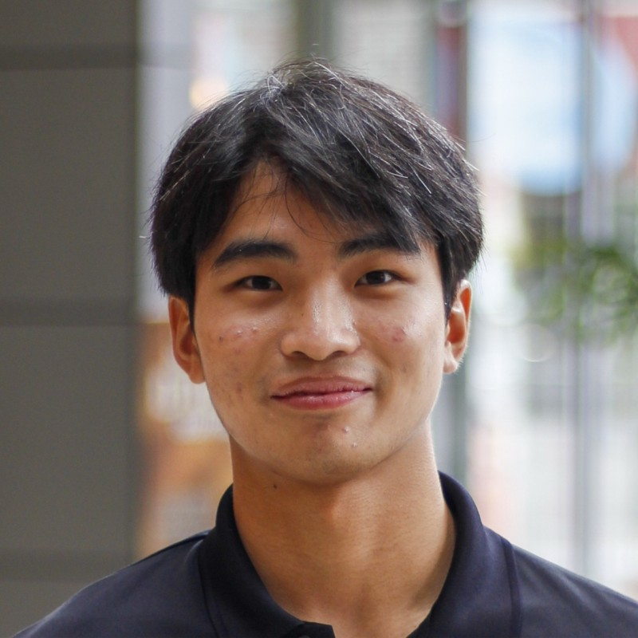
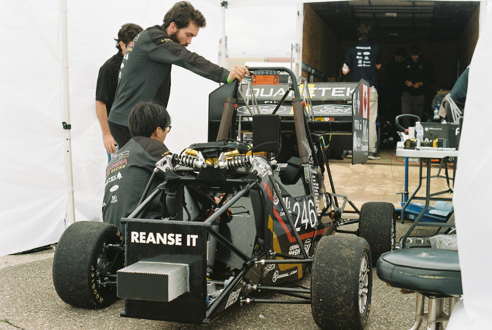
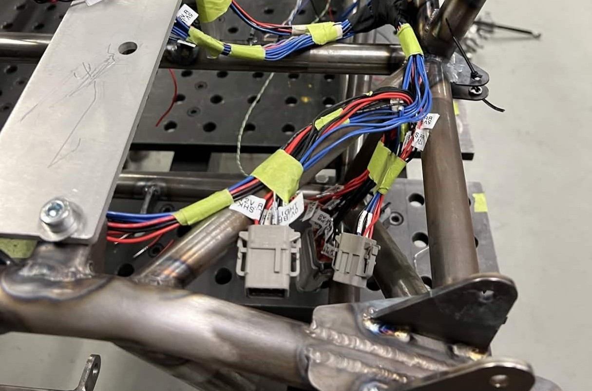
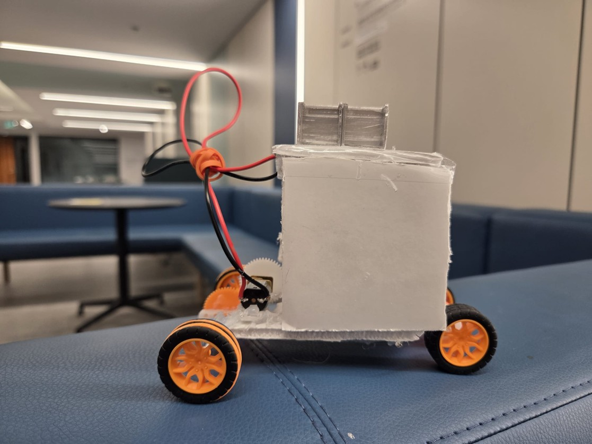
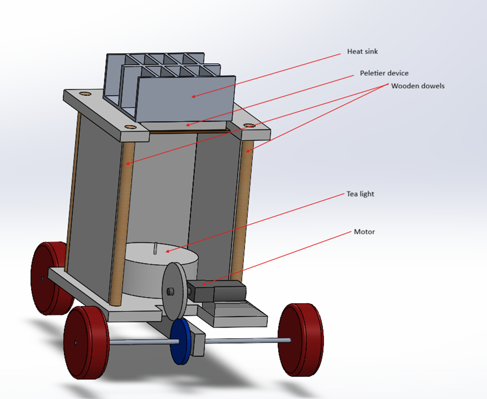
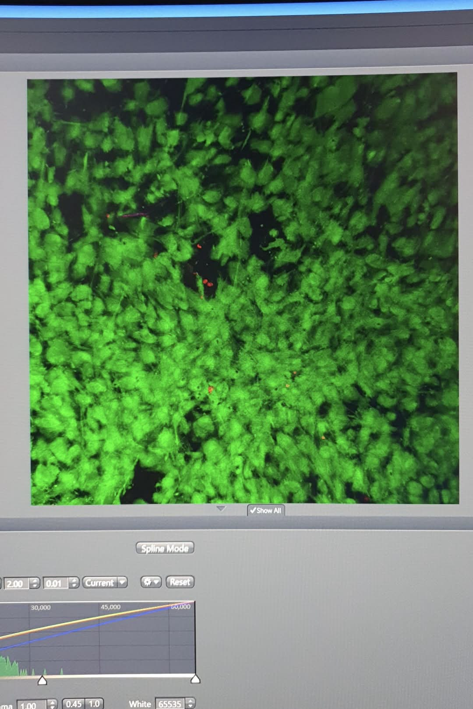

Formula Steering Wheel Paddle System
ESP32-based dual clutch paddle concept with hall sensors and Bluetooth for responsive control and lightweight packaging.
Mechanical Engineering, Electrical System Design
Hey! My name is Louis, I love cars, and everything engineering. I love anything that requires me to learn things and my interests are super varied, anything from theology to circuit analysis!

Hey! My name is Louis, I love cars, and everything engineering. A former electrical harness lead on Concordia Formula Racing, I have extensive experience in the realm of automotive engineering. I'm interested in cars, planes, rockets, trains, and everything in between. I'm also interested in pursuing higher education, through research.
ESP32-based dual clutch paddle concept with hall sensors and Bluetooth for responsive control and lightweight packaging.


Electrical harness design and integration workflow for dynamic race conditions, emphasizing reliability and serviceability. Made and reviewed custom PCB using Altium Designer. Mechanical manufacturing of adjustable push-rod suspension and CAM for carbon fiber suspension inserts.


Developed a thermoelectric-powered vehicle that converts heat into motion using the Seebeck effect. The design integrates thermal management (candle + heatsink), low-power motor selection, and drivetrain optimization to achieve efficient energy conversion and successfully complete a flat run and incline climb.
Click here to view the final report!Co-designed the accumulator and low-voltage wiring architecture, led PCB integration, and supported firmware debugging and system validation. Introducing new team mebers to custom firmware and harness manufacturing.

Contributed to hydrogel research workflows, sample preparation, microscopy, and data interpretation for experimental characterization. Using Scanning electron microcopy and confocal microscopy to monitor cell proliferation and measuring hydrogel pore size.
 )
)